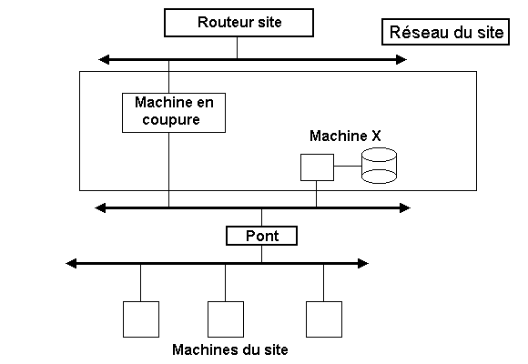

Ses besoins très importants en moyens de calculs et de simulation
ont incité la communauté scientifique de l'IN2P3 à
faire depuis très longtemps usage de l'outil informatique. Sa dispersion
sur tout notre territoire, et l'aspect très souvent multinational
des programmes et expériences de recherche, l'ont très rapidement
conduite à structurer ses moyens de traitement en réseau,
et à s'adapter constamment aux évolutions des protocoles et
de la technique.
Ce rôle de pionnier n'a pas eu que des bons côtés : des soucis liés à la sécurité informatique ont dû être affrontés depuis le milieu des années 80. Traitée au coup par coup au début, il est apparu rapidement nécessaire de structurer cette activité. Des correspondants de sécurité, assistés, dans la plupart des cas, d'un suppléant, ont été nommés, qui sont fédérés par un coordinateur à l'échelon national. Cette structure a donné de bons résultats et on n'a eu que relativement peu d'incidents importants à déplorer ces dix dernières années. Jamais ces incidents n'ont pris de proportions incontrôlables entraînant des conséquences graves pour le travail de l'Institut.
Outre le besoin fondamental de communication entre les sites, la connexion interactive à distance est la règle indispensable en raison des collaborations nationales et internationales de nos équipes. De ce fait, le "périmètre de sécurité" ne peut pas être géographiquement déterminé. L'infrastructure "privative" du réseau de connexions de nos laboratoires, qui ne communiquent vers l'extérieur que par quelques points, compense ce défaut de localisation et nous permet de mettre en oeuvre des techniques de surveillance et, en cas de besoin, d'action appropriées. Une seule équipe a la maîtrise technique de l'ensemble de l'infrastructure et il en résulte une efficacité réelle.
La croissance extrêmement rapide que connaît aujourd'hui l'Internet pourrait entraîner des conséquences préoccupantes dans la gestion de la sécurité informatique de notre communauté sans le bénéfice de cette infrastructure particulière qui nous assure un cloisonnement appréciable par rapport à l'Internet, sans pour autant dégrader la qualité du service que nous offrons.
Jacques Ganouna
Directeur du Centre de
Calcul de Physique Nucléaire

En un certain pays
De la lointaine Asie
Deux chercheurs s'aimaient d'amour tendre.
L'un d'eux s'ennuyant au logis
Fut assez fou pour entreprendre
Un voyage en lointain pays.
Sur un labo français, bien vite, il atterrit.
Sans méfiance,
Pour la Science,
L'Internet on lui ouvrit.
Amour, Amour, quand tu nous tiens...
Pour resserrer les liens
Avec sa tendre amie,
Mot de passe et loggin, bien vite, il lui transmit.
Si bien que la coquine, à toutes les données,
Put, bientôt, comme lui, sans problème, accéder
Et les prendre à son gré.
Il n'en eût nul regret
Etant peut-être là, qui sait ?
Pour ce forfait.
Moralité
Ô vous sur qui repose la Sécurité,
Gardiens des Réseaux, avec sévérité,
Refermez votre coeur et cachez vos fichiers.
De qui vient de si loin, vous devez vous méfier.

Sécurité informatique sur le WEB |
Le CNRS a créé un serveur WEB dont l'URL est
Outre des informations sur les activités scientifiques de l'établissement et son organisation administrative, il propose des pages "sécurité" divisées en deux volets : "Protection du patrimoine scientifique" et "Sécurité des systèmes d'information". Dans ce dernier, vous trouverez tous les articles parus dans Sécurité informatique, depuis le numéro 1. Son URL direct est :
| Evidemment, puisque vous lisez ce texte, c'est que vous connaissez l'existence de ce serveur Mais, cette annonce étant parue à la une de Sécurité informatique n 6, nous nous devions, pour être exhaustif, de la reproduire ici. |

Du fait de l'arrivée en quantité sur Internet de ce qu'on appelle les Internet providers (IP) du secteur privé, les problèmes de sécurité se posent et se poseront d'une façon beaucoup plus cruciale qu'il y a seulement un an. Sans parler de l'engorgement progressif du réseau, son accès s'ouvre à une nouvelle couche de population pas toujours animée des meilleures intentions. De récentes intrusions dans nos systèmes et dans ceux d'autres établissements nous ont poussé à rechercher les moyens de surveiller de plus près les accès par l'Internet sur un site.
Il existe, tout d'abord, des solutions dites "maison" qui sont souvent bien adaptées au profil d'un établissement, mais fréquemment confidentielles. La méthodologie et le logiciel utilisés sont difficiles à obtenir sans un engagement très strict de notre part. Elles exigent aussi un suivi lourd qui risque de dépasser les effectifs en personnel informaticien qualifié dont nous disposons. De tels systèmes sont en place à la NASA, au DOE ou, plus près de nous, au CEA, au CNES... Il s'agit là, en général, d'établissements auxquels une vocation industrielle ou militaire impose des contraintes sévères de sécurité, mais qui disposent de moyens en matériel et en personnel supérieurs aux nôtres.
Dans le domaine public, il existe des logiciels comme TAMU (Texas A&M University) mais, là encore, se pose le problème des effectifs nécessaires à leur exploitation quotidienne.
Dans le domaine commercial, les solutions sont souvent très chères et requièrent autant de personnel compétent que celles exigées par les produits du domaine public. Citons, par exemple, KERBEROS (Digital Equipment) ou TIS (Trusted Information System), dont le coût se chiffre par dizaine de milliers de dollars.
Il existe aussi la technique, maintenant bien connue, des firewalls (gardes-barrières), disposant de fonctionnalités d'authentification, de contrôle d'accès, de cryptage... mais sa mise en oeuvre est souvent lourde et contraignante à tous points de vue, particulièrement dans le contexte d'un site de recherche, par définition largement ouvert sur l'extérieur.
De plus, le nombre croissant de machines rend difficile, en cas d'intrusion externe, une investigation en profondeur des dégâts éventuels causés aux machines interconnectées d'un site.
Sans même parler des risques qu'entraîne, en interne, la présence de stagiaires ou d'étudiants dont l'esprit ludique ne s'accorde pas toujours avec les règles d'un comportement adulte.
Pour toutes ces raisons, il serait souhaitable de pouvoir dégager une solution simple et peu coûteuse qui, sans assurer directement une fonction de protection, puisse constituer un moyen de contrôle modulable de surveillance (c'est-à-dire de journalisation) des activités entrantes et sortantes du site.
Bull Ingénierie a développé pour le compte de l'EDF et du CEA une boîte noire Ethernet (que nous appellerons BNE dans ce qui suit), qui se branche en coupure de ligne pour encrypter et décrypter les messages appartenant à un couple d'adresses IP (réseaux ou machines). L'architecture conçue est très performante mais le mode de fonctionnement est trop rigide pour un contexte de recherche. Nous pourrions profiter de cette architecture pour étendre ses fonctionnalités selon des critères que nous détaillerons plus loin et enregistrer, à la demande, un échantillonnage des trames qui traversent la BNE. Chaque jour, à un moment convenu, un logiciel pourrait alors analyser les données ainsi échantillonnées au cours de la période précédente et produire un rapport succinct. Le but recherché est de permettre une exploitation par du personnel non nécessairement spécialiste en technique réseau. Ainsi, la solution serait divisée en deux parties : échantillonnage (la BNE) et analyse ultérieure.
 Le prix de la BNE devrait être suffisamment faible
pour ne pas être un frein à sa mise en service. Pour fixer
les idées, il devrait se situer au-dessous de 50 000 francs l'unité.
En outre, l'extension de ses fonctionnalités ne devrait pas annuler
ses fonctions d'origine de chiffrement, lesquelles devraient pouvoir être
activées (dans le cadre de la législation actuelle) indépendamment
de la surveillance, selon les besoins du moment.
Concrètement : Ce projet a été
étudié initialement dans le cadre des besoins de l'Institut
National des Sciences de l'Univers. Il a été proposé
à nos collègues de l'Enseignement supérieur, au moment
où nous étions placés sous la tutelle d'un ministère
commun. Il y aurait intérêt, en effet, à choisir une
solution commune, étant donné l'imbrication actuelle de beaucoup
de nos équipes de recherche.
Nous pensons qu'il s'agit là d'une solution allégée par rapport aux solutions complètes, difficiles à mettre en oeuvre et contraignantes dans un milieu ouvert comme le nôtre. Elle permettrait, en cas d'intrusion, de diagnostiquer plus rapidement et avec plus de précision la source des problèmes sans nécessiter de compétences trop fines en matière de réseau.
Bull Ingénierie a déjà fait homologuer les algorithmes de chiffrement auprès du SCSSI, ce qui faciliterait notre tâche de protection des informations confidentielles. Mais il est évident que chaque extrémité devrait alors être équipée du même dispositif de chiffrement.
Une étude de faisabilité et de coût se poursuit actuellement en consultation avec les établissements publics cités au début de cet article et qui ont déjà mis en oeuvre des solutions plus lourdes. L'auteur serait heureux de recevoir (de préférence par e-mail) tout commentaire ou suggestion relatifs à ce projet.
Tran Van Tue, INSU (Tran Van Tue peut être joint par e-mail à tran@obspm.fr)
Petit glossaire :
Les "r" commandes :

 |
Qui a peur des virus ? |
Les chiffres qui suivent sont extraits d'une statistique concernant uniquement la France, établie par François Paget, de l'association RECIF. Ils portent sur environ 400 000 machines de type PC (sur un total estimé de 5 000 000), principalement installées dans des grands comptes (Ministères, Banques, Gendarmerie...).
Nombre d'alertes Nombre de enregistrées départements touchés 1992 430 61 1993 726 (+30%) 76 1994 1303 (+45%) 85
Sur le plan régional, c'est l'Ile-de-France qui est le département le plus touché avec, pour 1994, 686 alertes. Viennent ensuite la région Rhône-Alpes, la Provence-Côte d'Azur et les Pays de Loire avec une soixantaine d'alertes chacun. Le nombre de virus recensés est passé de 2 650 en 1992, à 4 250 en 1993, puis à 5 700 en 1994. On estime que, fin 1995, il dépassera 7 000. Parmi ceux-ci, 30% sont d'origine française (4% en 1992, 10% en 1993, 23% en 1994). Dans le peloton de tête, on trouve principalement des virus système (60%).

Si vous avez vécu une aventure de sécurité informatique. Si vous avez une idée d'article. Si vous avez une critique à formuler. Si vous avez une question à poser. Bref, si vous avez quelque chose à dire :
Par la poste ou par e-mail. Mais, dans le premier cas, signez votre lettre. Les lettres anonymes (mais oui, nous en avons reçu !) atterrissent directement dans la poubelle !

On croyait, jusqu'à présent qu'un virus était spécifique d'une plate-forme particulière et qu'un fichier texte ne pouvait pas propager de virus. En réalité ce dernier point n'est vrai que pour les fichiers texte "purs". Ceux qui contiennent autre chose (par exemple des macros ou d'autres "objets") sont susceptibles de causer bien des dégâts lorsqu'ils sont chargés, explicitement ou implicitement, dans le programme prévu pour les exploiter.
Ainsi, dans les fichiers *.DOC de Word 6, le traitement de texte bien connu de Microsoft, outre le texte proprement dit, on trouve des informations de mise en page et, éventuellement, des macros. A l'ouverture du fichier, celles-ci se substituent aux macros "système" de même nom, s'il y en a. Certaines macros, ayant des noms particuliers (que nous n'indiquerons pas ici) ont la propriété de s'exécuter automatiquement lors du lancement de certaines fonctions telles que l'ouverture ou la fermeture d'un fichier. Supposons qu'une de celles-ci ait été remplacée par quelques instructions qui vont modifier le texte du fichier. Imaginons, par exemple que, partout, "le" sera remplacé par "la". Vous voyez d'ici le résultat. Mais on pourrait faire bien d'autres choses, plus destructrices.
Fin août, on apprenait via l'Internet l'apparition d'un tel virus, heureusement inoffensif (il se contente - pour le moment - d'afficher le message "That's enough to prove my point"). La nouvelle était bientôt confirmée par au moins trois éditeurs d'antivirus : Dr Solomon's AVTK, AVP, et F-Prot.
Pour une fois, les utilisateurs de MAC sont, eux aussi, "à la fête" car la macro est écrite en langage symbolique qui est le même pour Word PC et Word Mac.
Le système devient infecté dès la lecture d'un fichier contaminé. Le virus infectera alors tous les fichiers sauvegardés par la commande "Save as..." (enregistrer sous...). Si, ensuite, vous communiquez ce fichier fraîchement infecté à un autre utilisateur (de Mac ou de PC), celui-ci contaminera lui-même sa machine en ouvrant simplement le fichier. Sur les PC, on remarque la présence du virus par l'affichage d'une boîte de dialogue avec le chiffre "1" dès l'exécution du code du virus (c'est-à-dire dès la première ouverture d'un *.DOC infecté).
L'ennui, c'est que cette espèce de virus est indécelable par les mécanismes des antivirus habituels. Il faut faire appel à des détecteurs spécialisés.
Il semble que le danger soit limité à la version US de Word, certaines commandes de la macro, en anglais, n'étant pas reconnues par la version française. Tout au moins tant qu'un petit malin n'aura pas repris l'idée et ne l'aura pas adaptée à notre langue.
Microsoft propose sur l'URL http://198.105.232.5:80/kb/softlib/Office/q_word.htm
un détecteur et un antidote. Pour les PC, c'est
wd1215.exe (44 Ko, 16.8.95). L'exécution de ce fichier décompacte
deux fichiers : scan.doc et wd1215.doc. Il suffit d'ouvrir scan.doc sous
Word 6. Il contient les macros nécessaires à la détection
et à la décontamination. On suivra les indications affichées
à l'écran. Pour les Mac, c'est mw1222.hqx
(50 Ko, 17.8.95). On trouvera d'autres détails sur les serveurs Web
:
Tous les fichiers texte pouvant contenir des macro-commandes présentent le même type de risque. Postscript, en particulier, si on utilise les logiciels DISPLAYPOSTSCRIPT ou GHOSTSCRIPT.